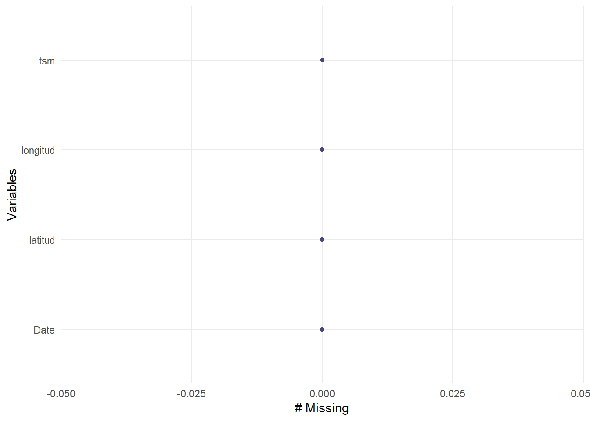
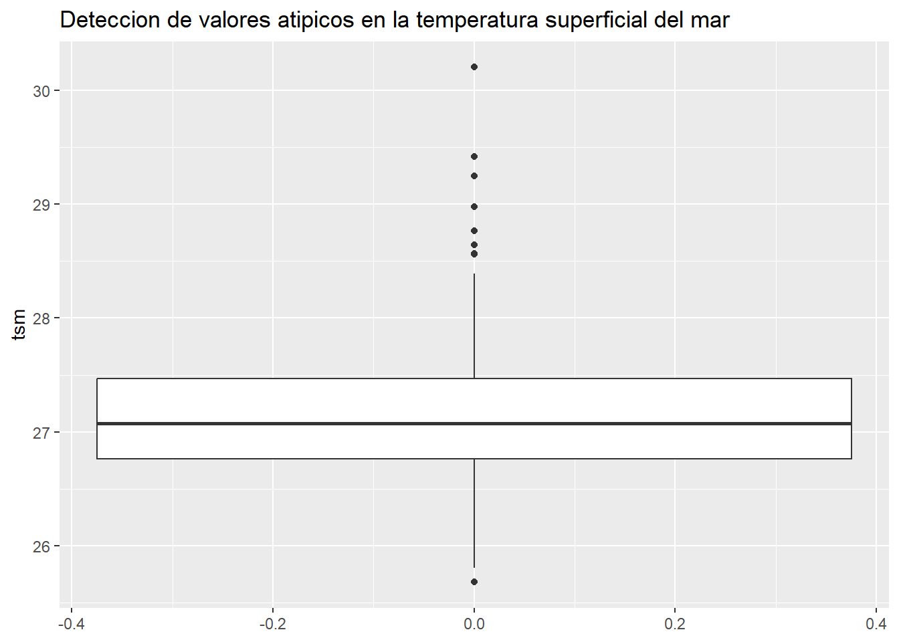

Chapter 5 Modelos de Pronóstico para Series de Tiempo
5.1 Modelo Holt-Winter
El análisis de series de tiempo es una herramienta clave que puede ser aplicada en diversas disciplinas, ya que permite entender y predecir patrones en datos secuenciales, facilitando la toma de decisiones informadas en áreas como la economía, meteorología, logística, oceanografía, entre otras. En el contexto de la oceanografía, por ejemplo, el análisis de series de tiempo es fundamental para estudiar variables como la temperatura superficial del mar, las cuales presentan patrones estacionales y tendencias a largo plazo que impactan en la dinámica climática, la biodiversidad marina y la seguridad marítima.
Dentro de las metodologías de análisis de series de tiempo, el método de Holt-Winters es especialmente útil por su capacidad para capturar componentes de nivel, tendencia y estacionalidad, lo que permite ajustar modelos a datos con patrones recurrentes, como los asociados a las variaciones estacionales en la temperatura del agua marina. Este método, también conocido como suavizado exponencial triple, descompone la serie en tres elementos principales: el nivel, que representa el valor promedio actual; la tendencia, que muestra la dirección y velocidad del cambio en el tiempo; y la estacionalidad, que capta fluctuaciones periódicas.
Gracias a esta descomposición, Holt-Winters proporciona pronósticos precisos y explicables, lo cual es esencial para aplicaciones que requieren entender no solo el valor esperado, sino también los factores que la componen. Para este caso, se aplicará este método a la serie temporal de Temperatura Superficial del Mar, con el fin de comprender condiciones climáticas futuras y posibles efectos en los ecosistemas marinos y en actividades como la navegación y la pesca, entre otras.
5.1.1 Análsis exploratorio y preparación de los datos
Como parte esencial de la implementación de cualquier modelo en ciencia de datos, es fundamental asegurar que el conjunto de datos cumpla con los requisitos básicos antes de proceder con el modelado. Esto incluye la eliminación de valores atípicos (outliers) y el tratamiento de los datos faltantes. Para ello, se realiza un análisis exploratorio de los datos, que permite identificar y corregir posibles inconsistencias, asegurando así que el modelo se base en información de calidad y esté preparado para generar predicciones precisas.
Identificación de datos ausentes
La mayoría de los modelos son susceptibles a la presencia de datos ausentes, por lo que es fundamental identificar estos valores en el conjunto de datos e imputarlos de manera adecuada, de acuerdo con la naturaleza de los mismos. Este paso es importante para garantizar la calidad y fiabilidad de los resultados del modelo. En este caso, la fuente de datos seleccionada, cuenta con la serie temporal completa.

Identificación de datos atípicos
Identificar y tratar los outliers (valores atípicos) en los datos antes de implementar un modelo, es un paso importante, ya que estos pueden distorsionar los resultados y afectar negativamente la precisión y el rendimiento del modelo. Los outliers pueden influir en la estimación de parámetros, alterar la distribución de los datos y sesgar las predicciones, lo que podría llevar a conclusiones erróneas. Por lo tanto, su detección y tratamiento adecuado garantiza que el modelo se base en datos representativos y confiables. En la siguiente figura se observa la existencia de valores atípicos, por lo tanto se empleará la mediana para tratarlos ya que estas fluctuaciones pudieron ser ocasionadas por eventos extremos y la mediana proporcionará una mejor estimación central de la distribución de los datos, sin verse afectada por esos valores extremos.

5.1.2 Ajuste del Modelo de Holt-Winters
Como se ha identificado en los capítulos anteriores, la serie temporal de la temperatura superficial del mar presenta características de estacionariedad. Esto implica que la serie exhibe una leve tendencia a largo plazo y que la amplitud de la variación se mantiene relativamente constante a lo largo del tiempo. En consecuencia, se aplicará el modelo Holt-Winter con estacionalidad aditiva para capturar adecuadamente estos patrones. Como resultado del ajuste, la siguiente figura muestra que en algunas ocasiones el modelo presenta una subestimación y sobrestimación; sin embargo, en general, sigue de manera precisa el comportamiento de la variable.
## [1] "es_ES.UTF-8"5.1.3 Evaluación del desempeño del modelo
Evaluar el desempeño del modelo es un paso importante para establecer que tan acertado es este para hacer predicciones, para ello se dividió la serie de tiempo en dos conjuntos: uno de entrenamiento que contiene el 80% de los datos y uno de prueba que abarca el 20% restante. Se ajustó el modelo sobre el conjunto de entrenamiento y se realizó un pronóstico que cubre la longitud del conjunto de prueba.
La gráfica Pronóstico Holt-Winters con Intervalo de Confianza muestra la evolución de la temperatura superficial del mar a lo largo del tiempo, donde la línea azul representa los datos históricos utilizados para entrenar el modelo, la línea verde el pronóstico generado por el modelo de Holt-Winters y la línea roja los datos reales del período de prueba. El área sombreada en verde claro indica el intervalo de confianza del pronóstico. Es notable que la precisión del pronóstico parece ser mayor en el corto plazo, es decir, cerca del final de la serie de entrenamiento. A medida que nos alejamos en el tiempo, el intervalo de confianza se amplía, lo que refleja la creciente incertidumbre en las predicciones a medida que aumenta el horizonte de pronóstico.
El desempeño del modelo se evulua utilizando métricas de precisión, como el error cuadrático medio (RMSE), para medir la exactitud de las predicciones en comparación con los valores reales.A partir de la figura siguiente y la tabla con los resultados de las métricas, se observa que el modelo de Holt-Winter ajstado para la serie de TSM, mantiene una consistencia razonable entre los conjuntos de entrenamiento y prueba. El Error Medio (ME) es bajo en el entrenamiento (0.0317), mientras que en la prueba es negativo (-0.1320), sugiriendo una ligera sobrestimación en el pronóstico. El Error Cuadrático Medio (RMSE) y el Error Absoluto Medio (MAE) son similares en ambos conjuntos, lo que refleja una estabilidad en los errores del modelo. La precisión en términos de MAPE muestra un ligero incremento en el conjunto de prueba (1.26% frente a 1.19% en entrenamiento), y el ACF1 bajo indica poca autocorrelación en los errores, lo que contribuye a la confiabilidad del modelo.
En conclusión, el modelo Holt-Winter muestra un desempeño adecuado para predecir la temperatura superficial del mar, reflejando una buena precisión y estabilidad en los errores entre los conjuntos de entrenamiento y prueba. La baja autocorrelación en los errores indica que el modelo captura correctamente las características de la serie temporal, lo cual es favorable para pronósticos en el corto plazo. Sin embargo, es importante considerar que los ligeros errores observados en el conjunto de prueba, particularmente la sobrestimación en algunas ocasiones, podrían afectar la precisión a largo plazo.